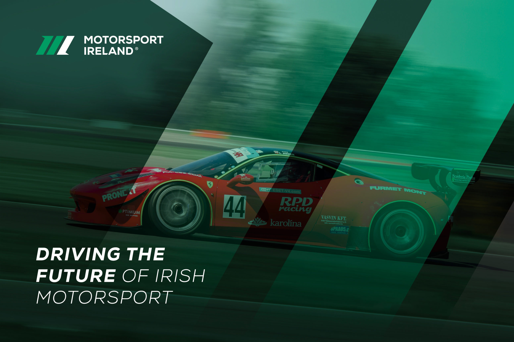
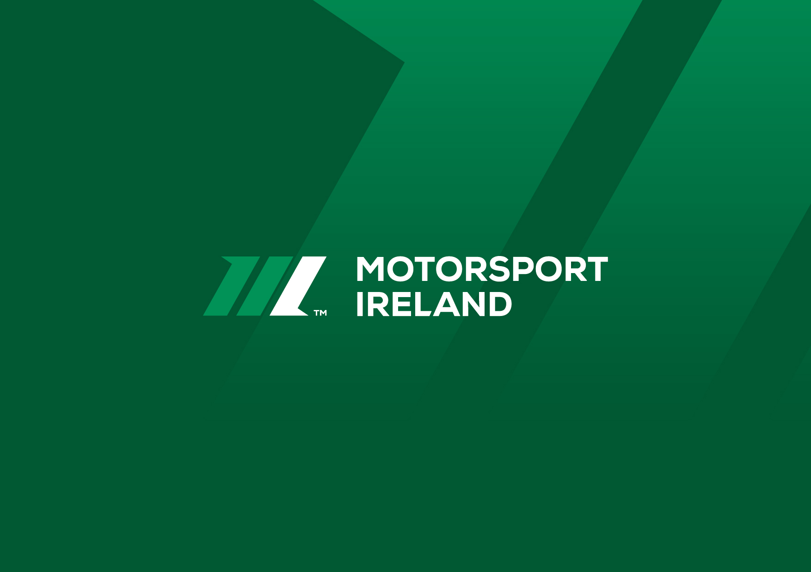
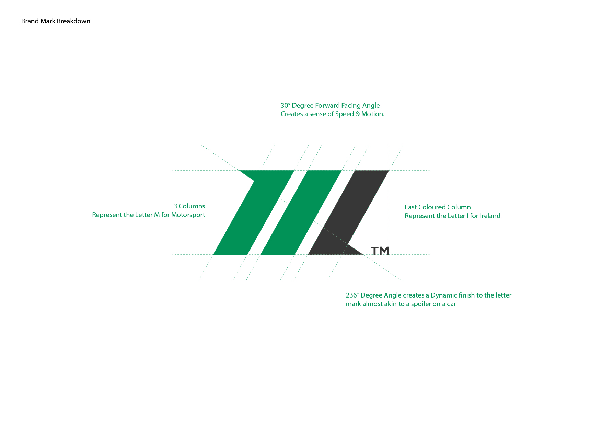
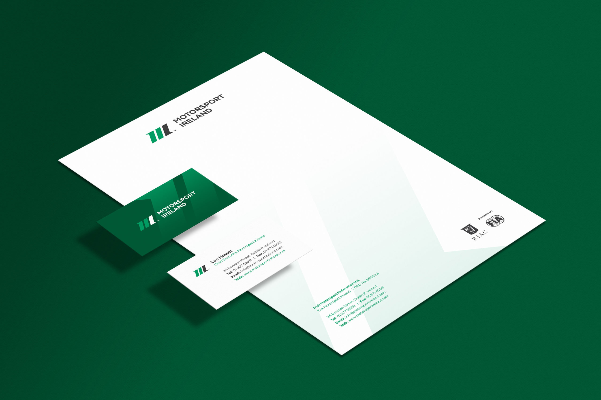

Motorsport Ireland
Creating an Iconic Brand Identity
Motorsport Ireland is the FIA-affiliated national governing body for four-wheeled motorsport in the Republic of Ireland, with 36 affiliated clubs running around 160 events a year across 12 branches of the sport. I was engaged to advise on brand strategy and develop exploratory identity work for the organisation's future.
Motorsport Ireland is the FIA-affiliated national governing body for four-wheeled motorsport in the Republic of Ireland, with 36 affiliated clubs running around 160 events a year across 12 branches of the sport. I was engaged to advise on brand strategy and develop exploratory identity work for the organisation's future.

Understanding the members
I examined the organisation's mission and values (respect, transparency, fairness, teamwork, enjoyment) and profiled its audiences, mapping the member journey for both existing and prospective members. That research defined the brief for a re-energised identity to spearhead all marketing activity.

An iconic, forward-moving mark
The concept was a bold, strong, forward-moving design reflecting the authority of a national sporting body, with a palette chosen to convey nationality and pedigree, anchored by the classic racing green. A full suite of imagery extended the identity across marketing and promotional materials.

High-performance web concepts
I analysed the existing website and developed prototype layouts around the strapline 'Driving the Future of Irish Motorsport', using energetic photography, vibrant templates and bite-sized content designed to keep members informed and exploring.

A note on this work
This identity was designed and developed but never implemented. The pandemic and subsequent budget constraints intervened, and it is not the organisation's current brand. I've included it because exploratory work of this depth still shows the thinking: research, strategy and craft applied to a national sporting institution.